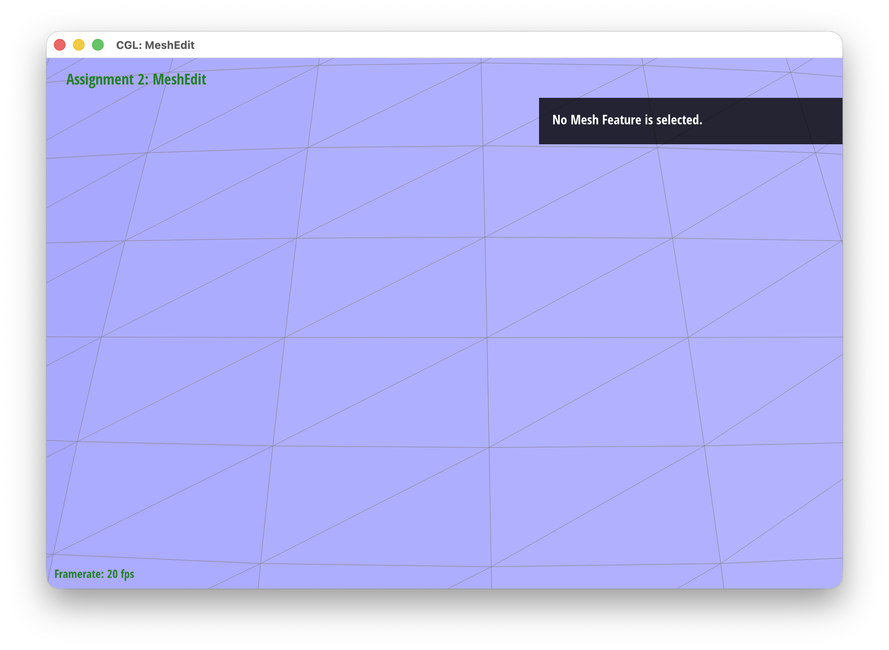
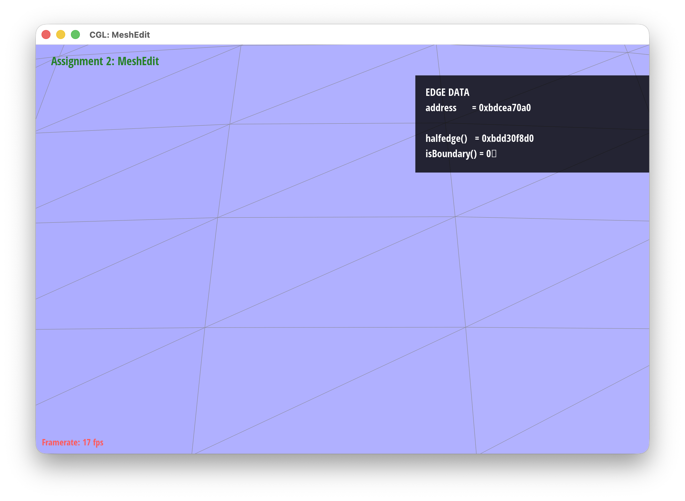
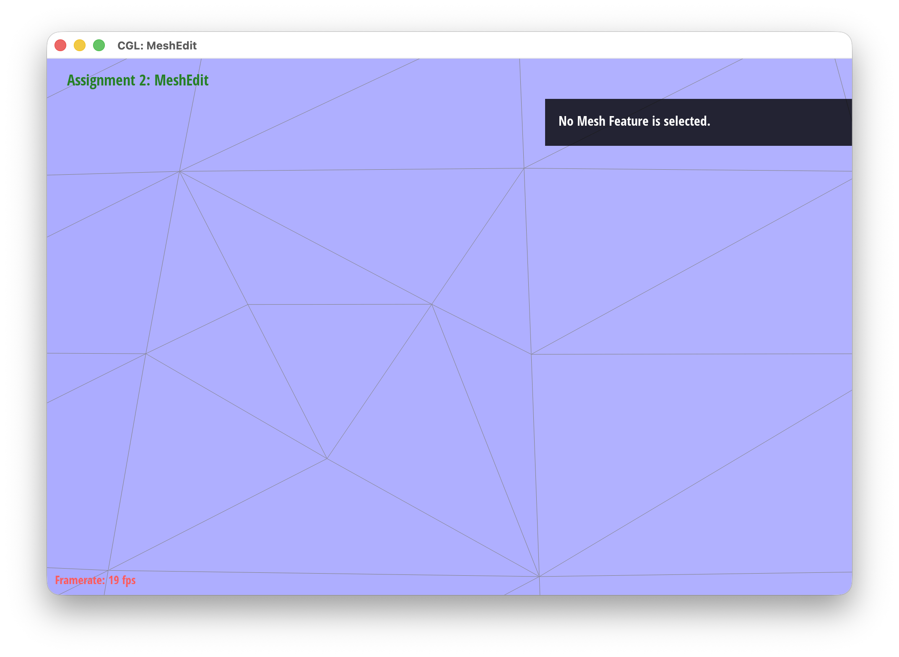

HalfedgeMesh::flipEdge() served us as a starting point. The tricky and perhaps most difficult part was to keep track all the edges and halfedges created from the new vertex.
To faciliate assigning everything the correct values, we first created variables to hold all of the current HalfedgeIter, VertexIter, FaceIter, and EdgeIter.
Then we created all the new stuff that we need to track of:
newVertex()newEdge().newFace().newEdge().v_m->position = 0.5 * ( v_b->position + v_c->position );HalfedgeIter via setNeighbors().HalfEdgeIter connecting vertex \(m\) and \(c\) would be named h_mc.
As we determined what to set for the half edges and neighbors, this helped us from making any unnecessary mistakes.|
 |
|
|
 |
 |